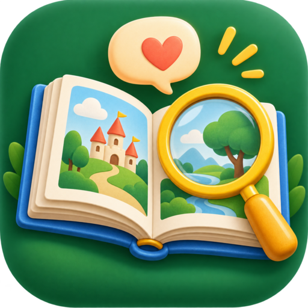
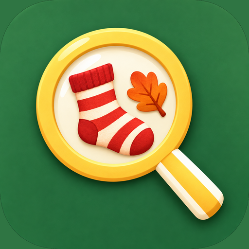

Lesen · entdecken · erzählen
Welches Spiel möchtest du heute spielen?
⚽
Auf dem Fußballplatz
17 Geschichten · 85 Karten
🍂
Im Herbstpark
16 Geschichten · 80 Karten

Finde den Fehler
20 Suchaufgaben mit Ton